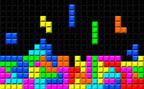
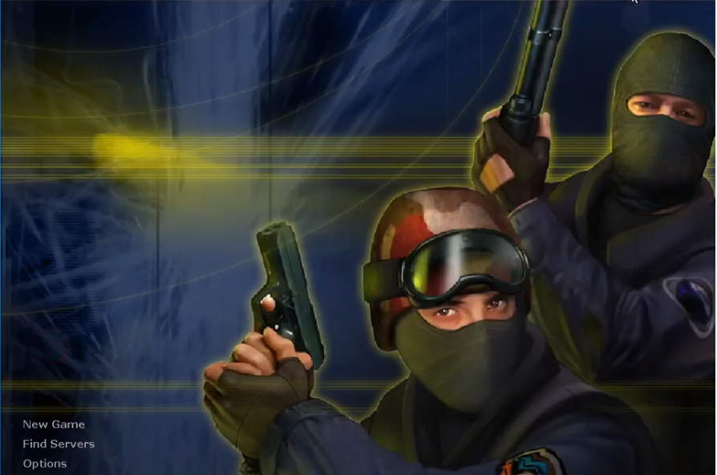

HISTOIRE DU JEU VIDEO

|
Histoire du Jeu Vidéo
|
|
L'histoire vidéoludique remonte probablement bien plus loin que ce que vous pensez. On pourrait même d'ailleurs lui adjoindre une préhistoire.
Vidéoludique, étymologiquement parlant, est issu du latin. Composé de ludus qui siginifie "jeu, amusement" et de video- qui signifie "je vois".
Cela fait maintenant plusieurs siècles que l'on trouve des inventions et des concepts, parfois même des escroqueries, qui témoignent de l'insistance de l'Homme à toujours inventer de nouveaux types de divertissements.
Le Turc mécanique est présenté à son époque comme un automate réputé capable de jouer aux échecs contre un humain.
Un mécanisme voyant, qui n'était qu'une diversion, permettait de masquer la profondeur réelle du meuble où se cachait un joueur humain chargé de faire fonctionner cette tromperie.
En 1864, Charles Babbage s'interroge sur le jeu d'échecs joué par une machine et considère qu'une machine analytique dont il concevait le prototype, tout simplement un des ancêtres de l'ordinateur, pourrait jouer une partie d'échecs.
A la foire de Paris de 1914, Leonardo Torres Quevedo construit El Ajedrecista présente un automate électromécanique qu'il a conçu en deux ans permettant de jouer aux échecs la finale roi et tour contre roi seul.
En 1940, Edward Condon crée le Nimatron, un automate composée de relais électromécaniques permettant de jouer au jeu de Nim, qui inspire la création du Nimrod.
La machine est présentée lors de la Foire internationale de New York de 1939-1940. Puis Raymond Redheffer crée une machine plus sophistiquée que le Nimatron en 1941.
Le 12 mai 1941, l’inventeur allemand Konrad Zuse présentait avec le Z3 le premier ordinateur qui fonctionnait vraiment.
Il ne pouvait que multiplier, diviser, trouver la racine au carré et mémoriser 64 mots mais c’était le premier ordinateur programmable au monde fonctionnant en mode binaire.
Genèse du Jeu Vidéo
|

Naissance de l'Industrie Vidéoludique
|

De l'Arcade à la Console de Salon
|
De la 2D à la 3D
|
Première Industrie Culturelle Mondiale (1/2)
|

Première Industrie Culturelle Mondiale (2/2)
|

Vers Toujours Plus de Diversité
|
Quel Avenir Pour le Jeu Vidéo?
|